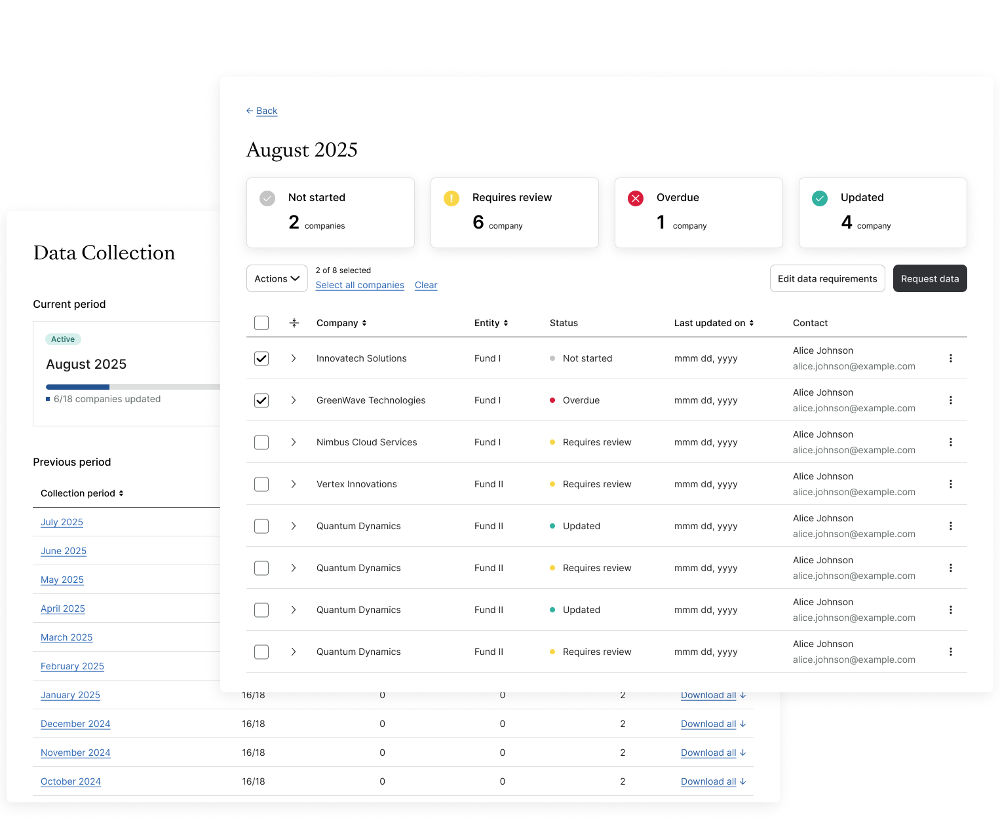
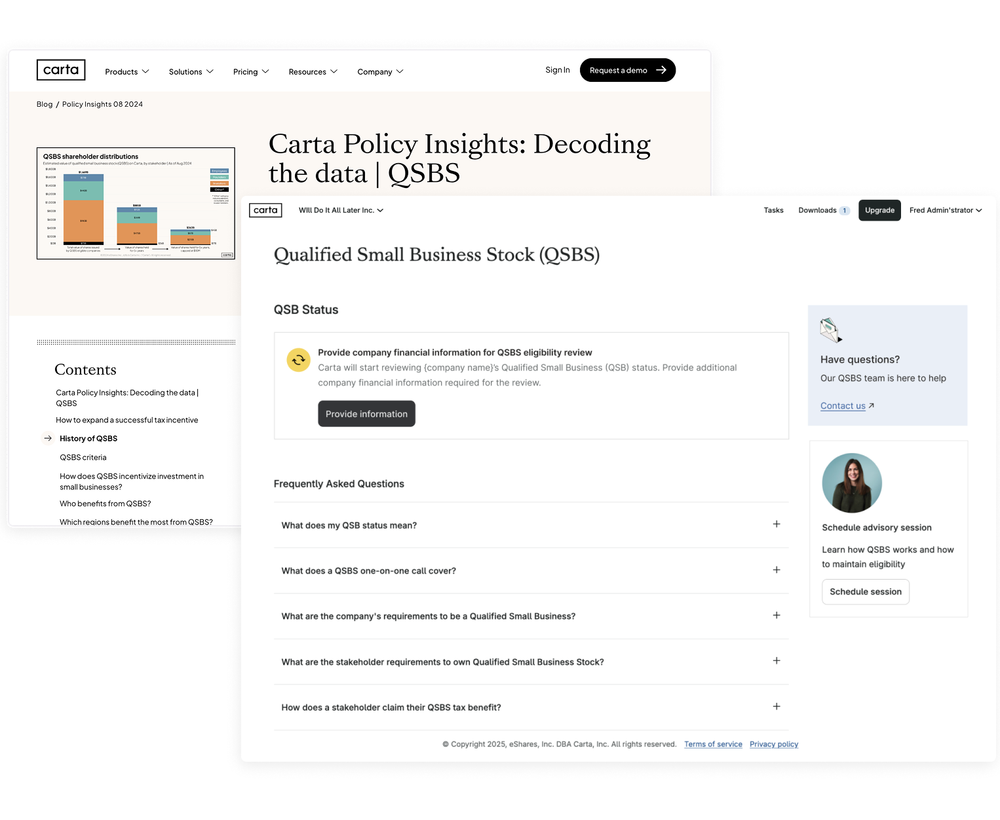
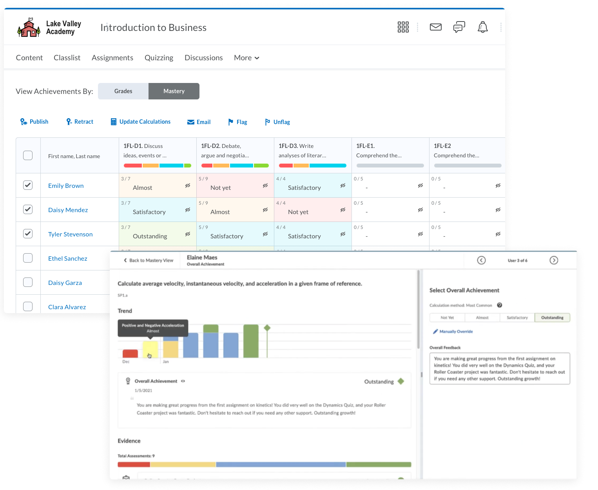
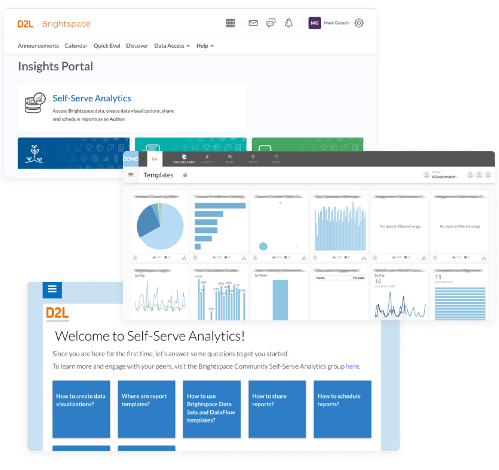
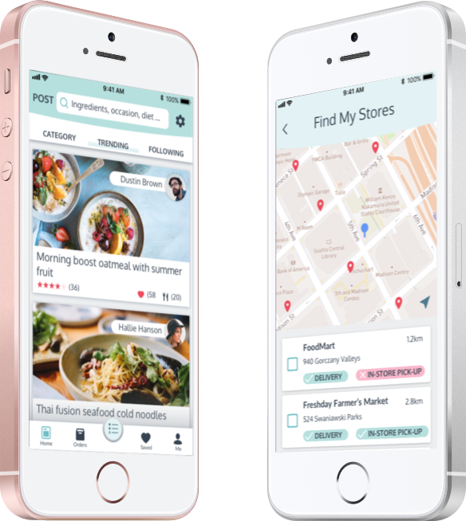

ABOUT ME
I didn’t take the traditional path to design. My journey began in scientific research, where I learned that true innovation requires both rigorous data and deep empathy. Today, I use that analytical foundation to "meet people where they are," translating high-complexity problems into simple, empowering experiences.
I thrive in the weeds of complex workflows and technical constraints. Whether I’m designing for EdTech or regulated FinTech spaces, I look past the surface to see the broader system, ensuring every design choice serves both the user’s motivation and the business’s bottom line. In an era of agentic workflows, I view design as the process of defining the boundary between human intent and machine execution—ensuring that every AI interaction is grounded in logic, transparency, and business value.
Beyond the screen, I believe my role is to act as a bridge. I advocate for the user while driving toward measurable outcomes, helping cross-functional teams navigate the shift from static interfaces to intelligent, conversational systems. I’m passionate about designing for the future of work, where human creativity and machine efficiency coexist in harmony. If you’re interested in chatting about design, AI, or just want to say hi, feel free to reach out!
AI-powered Data Collection
Repositioned Data Collection as a foundation of Carta's Private Capital ERP by designing for multi-cadence flexibility, self-serve scalability, and multi-source data ingestion. Led solo design across UX strategy, IA exploration, status modeling, single-page configuration, and firm/responder workflows. Set design foundation for AI-driven automated extraction and reconciliation with human-in-the-loop.

AI-powered Data Collection
UX Strategy | IA and status modeling
Repositioned Data Collection as a foundation of Carta's Private Capital ERP by designing for multi-cadence flexibility, self-serve scalability, and multi-source data ingestion.
Led solo design across UX strategy, IA exploration, status modeling, single-page configuration, and firm/responder workflows. Set design foundation for AI-driven automated extraction and reconciliation with human-in-the-loop.
view case study
Reimagine Tender Offer
Defined and delivered a scalable user experience that provides real-time visibility into tender offers, reduces manual operational overhead, and establishes a foundation for self-serve, product-led liquidity workflows.

Reimagine Tender Offer
Product Design | UX Vision & Design
Defined and delivered a scalable user experience that provides real-time visibility into tender offers, reduces manual operational overhead, and establishes a foundation for self-serve, product-led liquidity workflows.
As a strategic IC, I worked on the UX vision, phased delivery planning, and led end-to-end product, UX, and UI design through handoff—driving daily issuer usage during tenders, enabling scale with a lean service team, and eliminating 80% of manual tooling.
view case study
QSBS Statement for Investors
Designed a structured, scalable QSBS intake experience that captures the right financial information upfront, reduces manual follow-ups, and enables faster, more reliable delivery across Carta.

Financials for QSBS
UX/UI Design
Designed a structured, scalable QSBS intake experience that captures the right financial information upfront, reduces manual follow-ups, and enables faster, more reliable delivery across Carta.
The redesigned experience drove a 55% increase in deliveries, reduced the backlog by 70%, and cut average time to delivery by 75%. About 80% of customers now reach review-ready status without manual intervention.
view case study
Mastery Gradebook
A powerful tool that enables educators to use learning outcomes to provide personalized interventions and make continuous improvement on course content. Feature Demo

Mastery Gradebook
A powerful tool that enables educators to use learning outcomes to provide personalized interventions and make continuous improvement on course content. Feature Demo
Product Design | UX/UI Design
Designer of the product from concept to launch. Conducted explorative user research, design exploration, stakeholder review, design critique, usability testing, and accessibility testing, with the goal of a useful, accessible, and delightful experience in mind.
View Case Study
Self-Serve Analytics
A data analytics solution designed to enable educators with various levels of data analysis skills to benefit from their own teaching and learning data right within Brightspace®.

Self-Serve Analytics
A data analytics solution for educators with various levels of data analysis skills to benefit from teaching and learning data right within Brightspace®.
Product Design | UX/UI Design
Designed the end-to-end experience for data analysts and report consumers to easily access and share insights from Brightspace® learning data through a third-party BI tool integration.
View Case Study
- • Mapped user personas and journeys to identify pain points and design opportunities
- • Conducted system analysis to evaluate experience gaps and inform the choice of integration partner
- • Defined user flows and service blueprints to align user interactions with backend systems
YUMX
A place to find great recipes, get groceries delivered, and share accomplishments with the community.

YUMX
A place to find great recipes, get groceries delivered, and share accomplishments with the community.
Product Design | UX/UI Design | Branding
YumX is an E-Commerce mobile application. Its goal is to encourage home-cooking and support local stores by providing a user-friendly experience of getting cooking inspirations and shopping groceries online.
view case study
let's connect
Thanks for stopping by!
Check out my resume and let's connect if you like to chat about my work or discuss UX design.
If you’re around Waterloo CA, I’m always down for a coffee and a good chat — espresso yourself! Not nearby? A virtual coffee works just as well. ☕